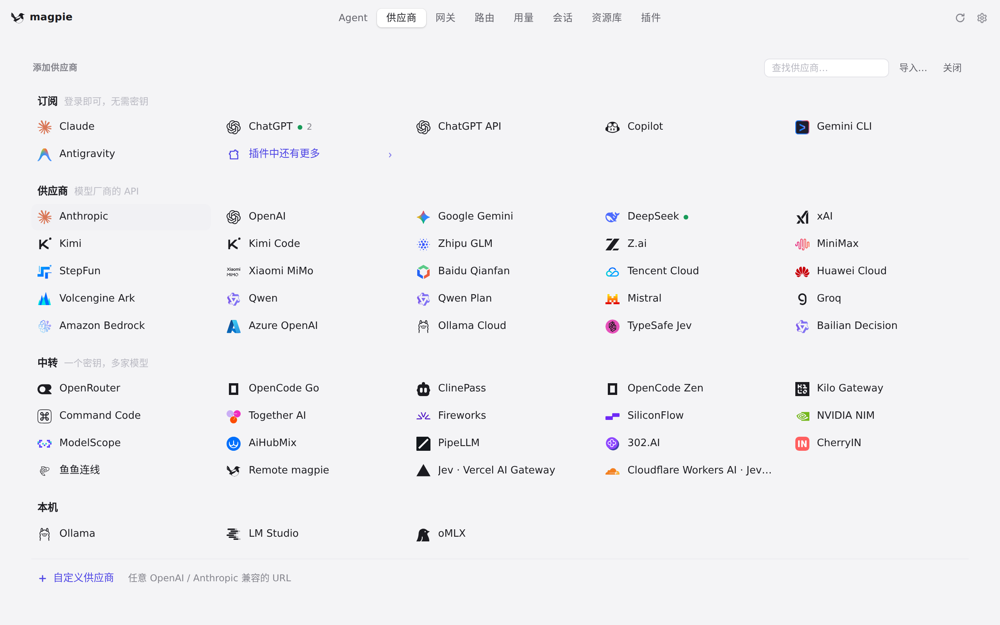
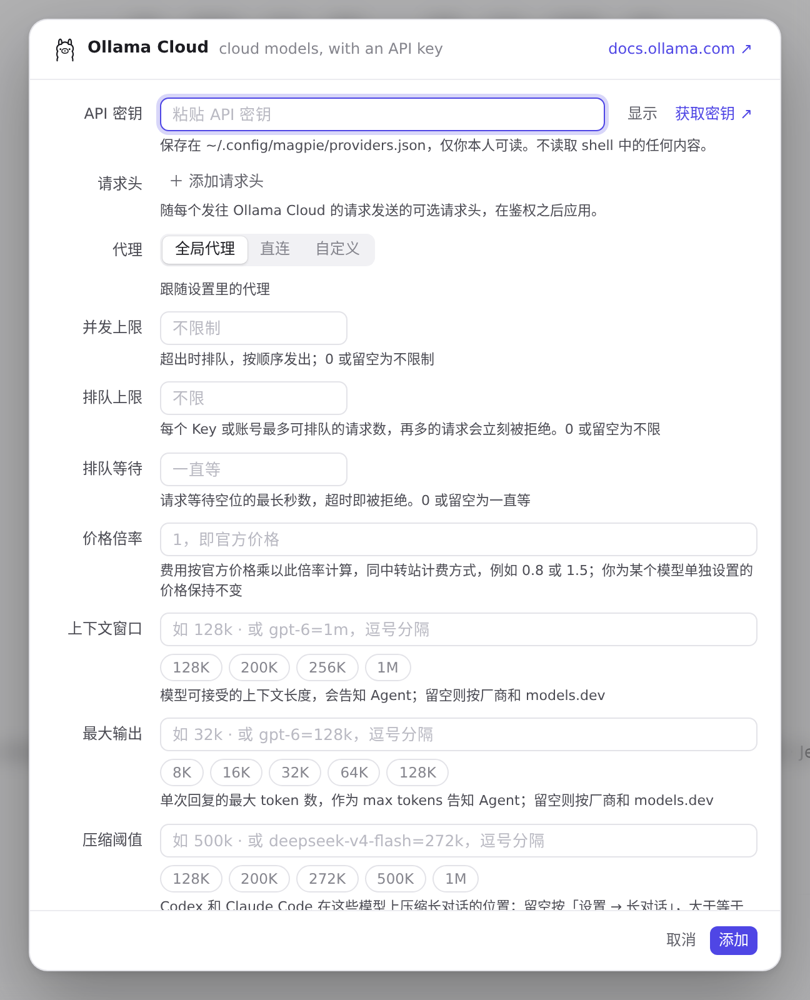
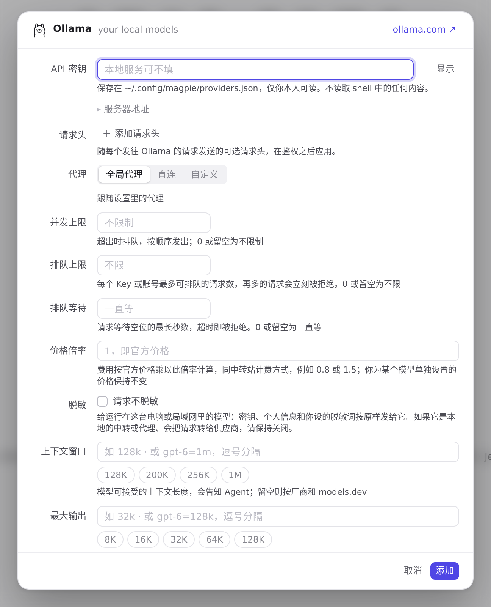
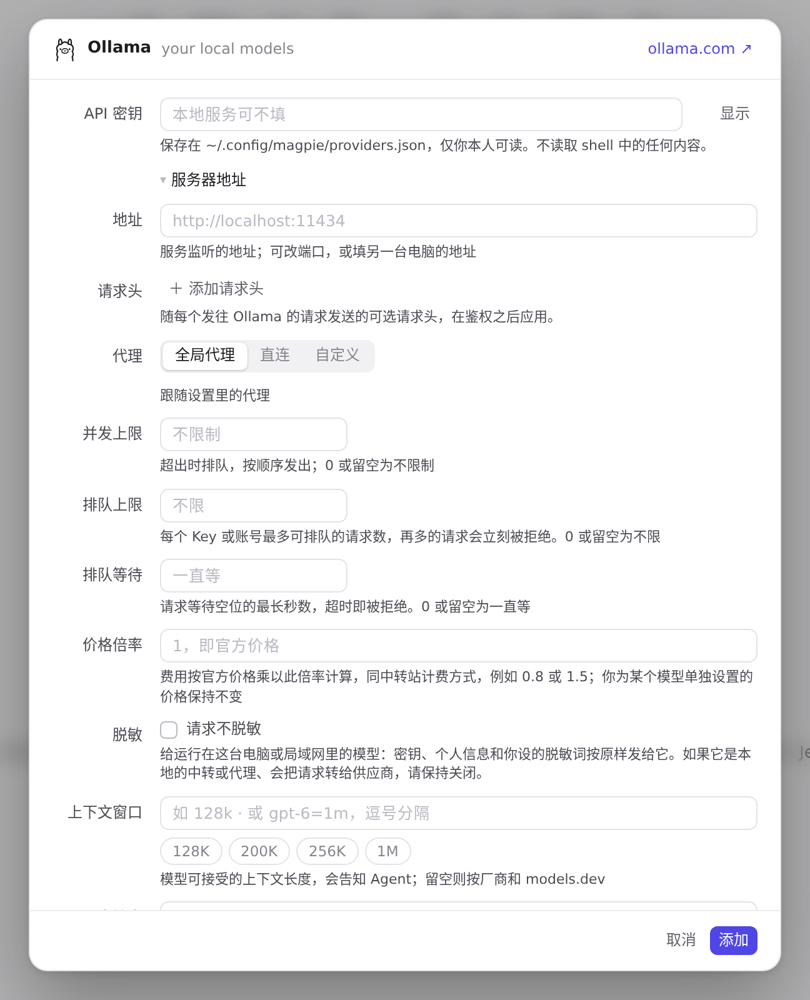
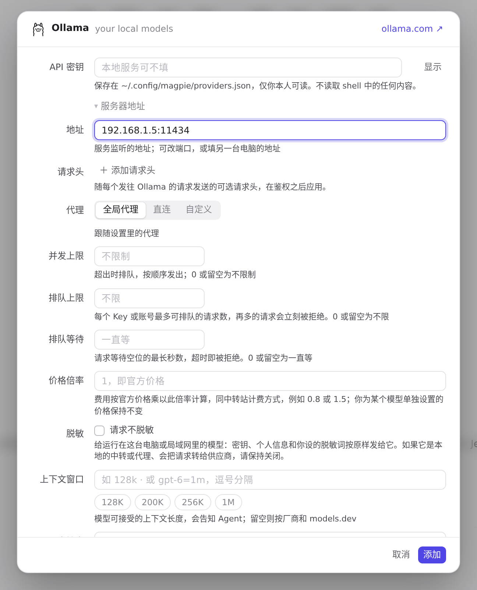
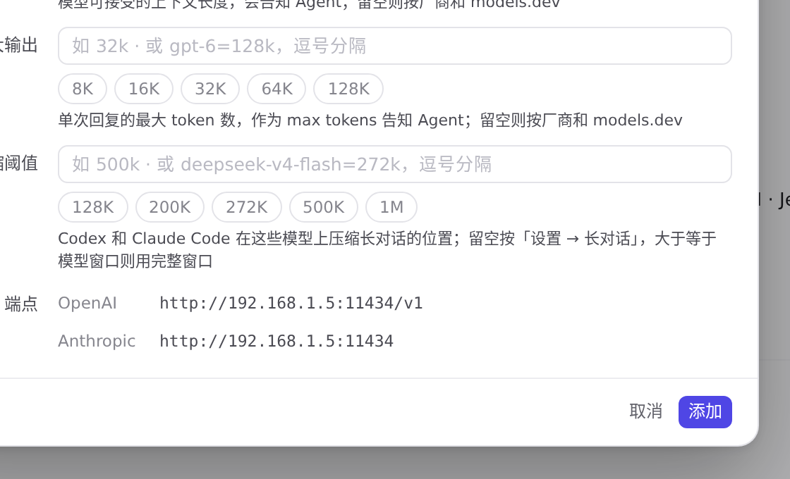
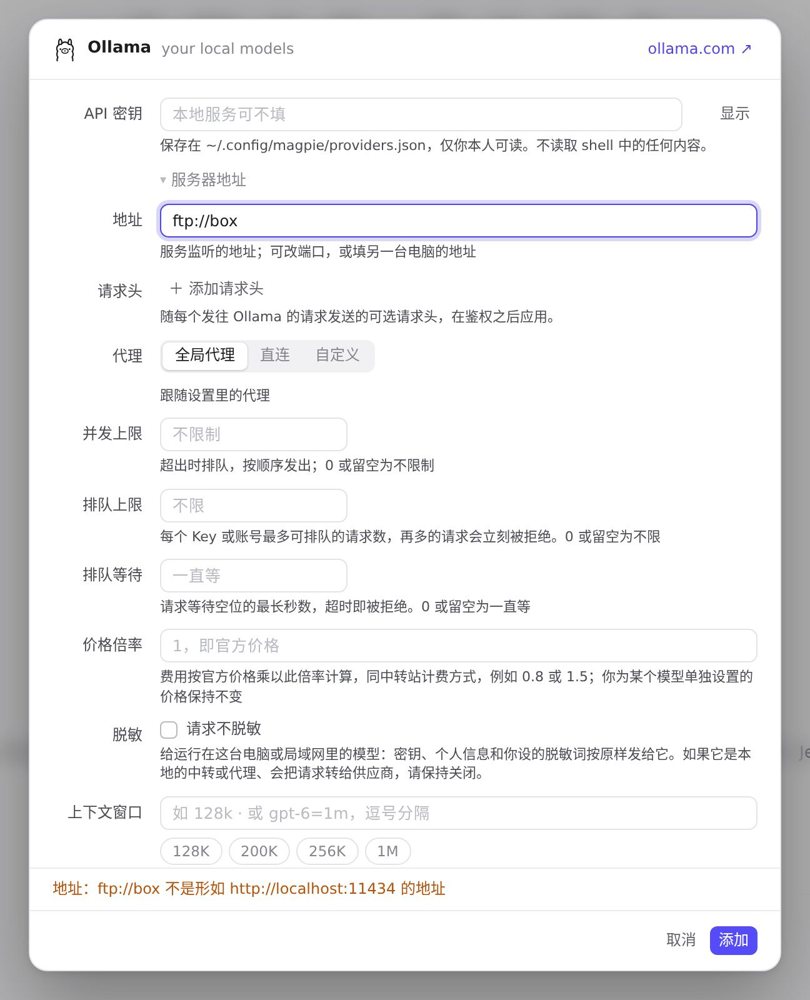

#1165 界面预览
commit 05e8d47 · 回到 PR · 本机预设（Ollama、LM Studio、oMLX）的添加/编辑编辑器在密钥下方新增折叠的「服务器地址」一节，可填别的端口或另一台电脑的地址：端点预览随输入变化，地址非法时报错并聚焦该字段；同时 LM Studio / oMLX 的预设说明从「:1234 / :8000」改为「默认端口 1234 / 8000」。
红线是鼠标走过的轨迹，红色圆环是一次点击；底部文字是这一步在做什么。空格暂停，← → 逐段查看。

新增 Ollama 时填写服务器地址 · 添加供应商面板里的预设

新增 Ollama 时填写服务器地址 · 新增 Ollama 的编辑器：密钥下方折叠的「服务器地址」

新增 Ollama 时填写服务器地址 · 新增 Ollama 的编辑器：密钥下方折叠的「服务器地址」

新增 Ollama 时填写服务器地址 · 展开后的地址输入框与提示

新增 Ollama 时填写服务器地址 · 填入 192.168.1.5:11434 之后的编辑器

新增 Ollama 时填写服务器地址 · 端点预览

地址不是地址时新增被拒 · 填 ftp://box 后按「添加」的编辑器